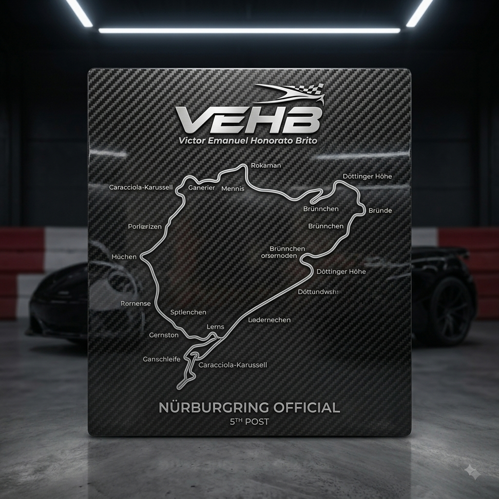

O lendário Porsche 911 GT3 RS
Por: Victor Emanuel Honorato Brito
Nascido para as pistas, o GT3 RS é a definição perfeita de aerodinâmica avançada e motor aspirado de alta performance.
Fonte: Porsche Official
Acelerando no universo dos carros esportivos e supermáquinas
Por: Victor Emanuel Honorato Brito
Nascido para as pistas, o GT3 RS é a definição perfeita de aerodinâmica avançada e motor aspirado de alta performance.
Fonte: Porsche Official

Por: Victor Emanuel Honorato Brito
Descubra como os motores quad-turbo e a engenharia de ponta permitem que hipercarros alcancem velocidades extremas.
Fonte: Top Gear

Por: Victor Emanuel Honorato Brito
Entenda por que esse material ultra resistente e leve revolucionou a construção do chassi dos supercarros modernos.
Fonte: AutoEsporte

Por: Victor Emanuel Honorato Brito
Com torque instantâneo e acelerações de 0 a 100 km/h em menos de 2 segundos, os hipercarros elétricos chegaram para dominar.
Fonte: Motor1

Por: Victor Emanuel Honorato Brito
Conheça a pista lendária na Alemanha que serve como o teste definitivo de tempo e performance para todo carro esportivo.
Fonte: Motorsport